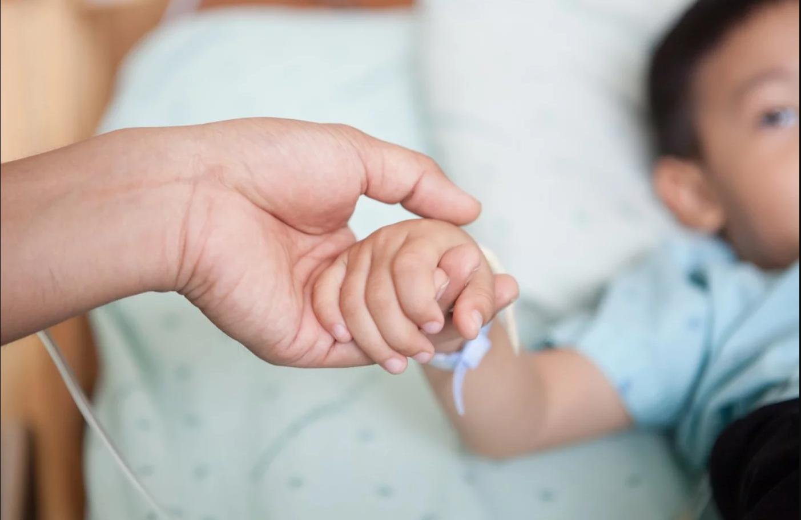

Mision de F.A.R.O
Enfrentar la hospitalización de un hijo o hija debido al cáncer es una de las experiencias más difíciles que puede atravesar una familia. Por ello, estamos comprometidos con el bienestar de estas familias y creemos firmemente en la necesidad de crear un grupo de apoyo en el Pediatric Cancer Center Barcelona.